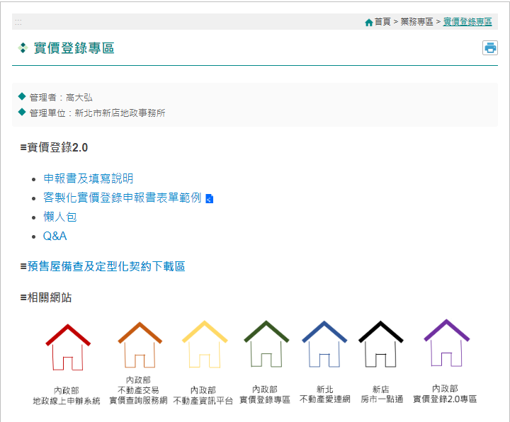
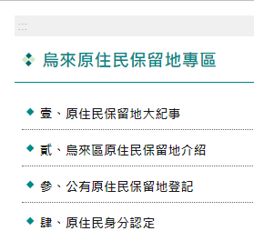
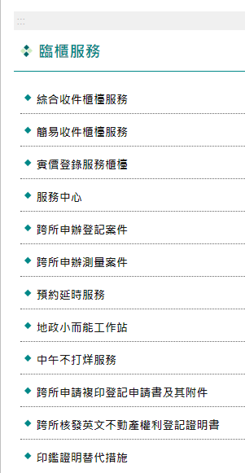
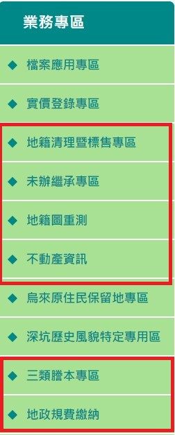
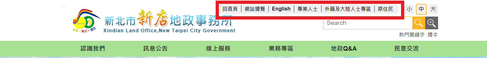
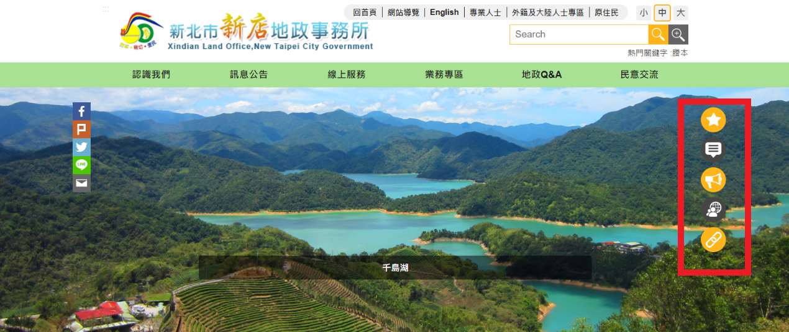
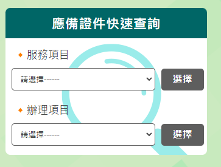
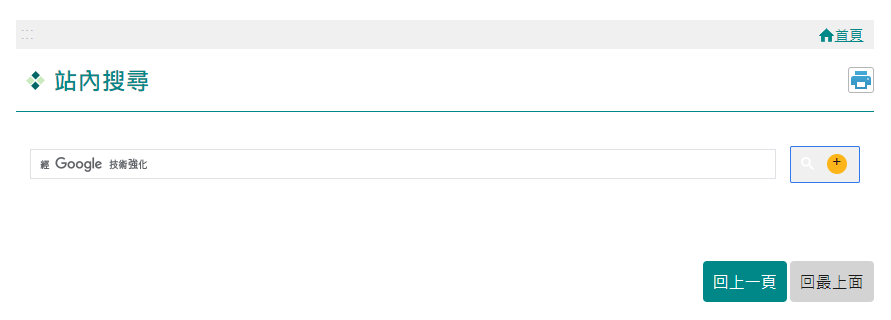
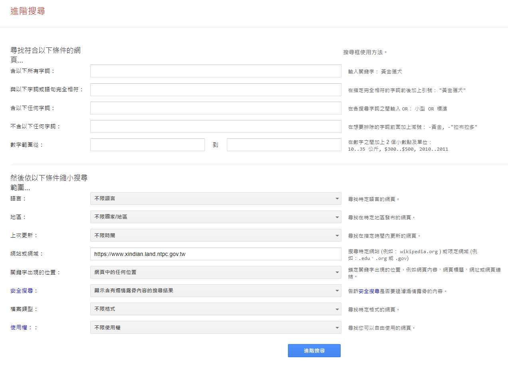
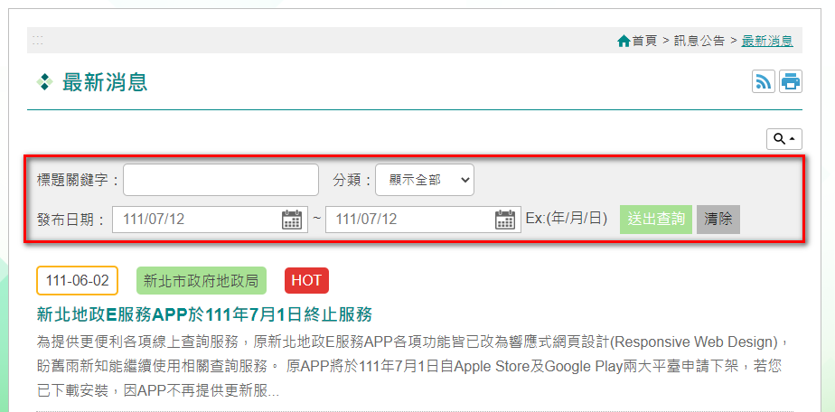

三、網站使用便利性
(二) 多元檢索方式
-
建立各種查詢專區
依使用者屬性，將各種查詢服務分門別類、建立專區，以便使用者查詢閱覽。
專區 內容介紹 檔案應用專區 提供線上展覽館、檔案申請介紹、機關檔案目錄查詢、檔案情報站等資訊，推廣檔案應用服務。
【時光廊道線上展覽館】實價登錄專區 提供客製化實價登錄申報書表單範例、實價登錄新制懶人包、常見問答、相關便民網站連結等，幫助民眾了解新制及系統操作。

【網站實價登錄專區】烏來原住民保留地專區 包含原保地大紀事、原保地介紹、登記流程、原住民身分認定等內容，向民眾介紹原住民保留地之相關知識。

【網站烏來原住民保留地專區】原住民保留地專區 大紀事、保留地介紹、登記流程、身分認定介紹 臨櫃服務專區 介紹「綜合收件櫃檯服務」、「簡易收件櫃檯服務」、「實價登錄服務櫃檯」、「服務中心」、「預約延時服務」、「地政小而能工作站」、「中午不打烊服務」等所有櫃檯服務。

【網站臨櫃服務】開放參與專區 包含民眾參與創新提案、民眾參與網站改善建議、研習活動線上報名 3 部份，鼓勵民眾一同發想各種創新或改善建議，若提案經採用還有精美禮物，平時舉辦之講座也可透過此專區報名參加。

【網站開放參與專區】高齡友善服務專區 介紹本所各項高齡友善貼心服務及相關網站連結，方便高齡者及其親友查詢。
【網站高齡友善服務專區】其他專區 另有針對民眾詢問度高之業務設置三類謄本專區、地籍清理暨標售專區、未辦繼承專區等，讓民眾可以輕鬆找查。

【網站其他業務專區】 -
快捷檢索方式
透過網站首頁諸如「快捷服務」、「應備證件快速查詢」、「右方快捷區」等各項分眾、分類功能快速進行檢索，提高查詢效率。
(1)分眾導覽
(2)右方快捷區：固定於網頁右側，提供快捷鍵達到快速移動至首頁各區塊功能。
(3)快捷服務
(4)應備證件快速查詢
-
精確搜尋方式
(1)全文檢索功能：使用Google Search提供使用者站內搜尋、進階檢索功能，並提供熱門關鍵字。
站內搜尋

進階搜尋

(2)標題關鍵字搜尋:透過網站後台維護功能設定各頁面之檢索資訊，使用者可輸入標題關鍵字、點選發佈起迄日期及分類等條件進行查詢。
